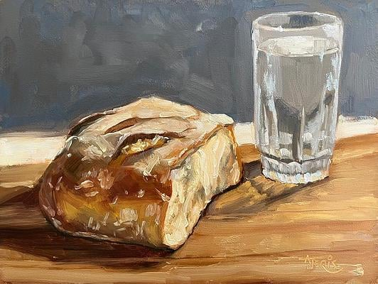

Fasting of Ramadan#
{kind=link}
Reading Objectives
By the end of this text, students will be able to:
Explain the nine wisdoms of fasting in Ramadan.
Describe how fasting develops gratitude and compassion.
Understand how fasting disciplines the instinctual soul (nafs).
Explain Ramadan’s connection to the Qur’an.
Analyze how fasting prepares believers for eternal life beyond worldly transience.
Introduction & Qur’anic Foundation#
{kind=link}
This piece explains nine of the many examples of wisdom in the month of Ramadan.
In the Name of God, the All-Merciful, the All-Compassionate.
It was the month of Ramadan in which the Qur’an was bestowed from on high as a guidance unto man and a self-evident proof of that guidance, and as the standard to discern true from false. (Al-Baqarah 2:185)
Explanation
Ramadan is the month in which the Qur’an was bestowed. It is a luminous month that serves as guidance for humanity.
Quick Check!
What does it mean that the Qur’an was bestowed?
How does this verse show Divine lordship?
What does it mean to discern between true and false?
First Wisdom: Fasting and Divine Lordship#
{kind=link}
The fasting during the month of Ramadan is one of the five pillars of Islam, and it is one of the greatest of the marks and observances of Islam. There are many purposes and instances of wisdom in the fast of Ramadan which look to both God Almighty’s lordship, and to man’s social life, his personal life and the training of his instinctual soul (nafs), and to his gratitude for Divine bounties.
One of the many instances of wisdom in fasting from the point of view of God Almighty’s lordship is as follows:
God Almighty created the face of the earth in the form of a table laden with bounties, and arranged on the table every sort of bounty in a form of “From whence he does not expect,” (At-Talaaq 65:3) in this way stating the perfection of His lordship and His mercifulness and compassionateness.
Human beings are unable to discern clearly the reality of this situation while in the sphere of causes, under the veil of heedlessness, and they sometimes forget it.
However, during the month of Ramadan, the people of belief suddenly become like a well drawn-up army. As sunset approaches, they display a worshipful attitude as though, having been invited to the Pre-Eternal Monarch’s banquet, they are awaiting the decree of “Fall to and help yourselves!” They are responding to that compassionate, illustrious, and universal mercy with comprehensive, exalted, and orderly worship.
Do you think those who do not participate in such exalted worship and noble bounties are worthy to be called human beings?
Explanation
Fasting reveals God’s lordship and shows that all bounties come from Him. It removes the veil of heedlessness and inspires gratitude and worship.
Quick Check!
How does fasting reveal God’s lordship?
What are Divine bounties?
What is meant by the veil of heedlessness?
Why is gratitude connected to fasting?
What does the word comprehensive suggest about worship in Ramadan?
Second Wisdom: Gratitude for Divine Bounties#
{kind=link}

One of the many instances of wisdom in the fast of the blessed month of Ramadan with respect to thankfulness for God Almighty’s bounties is as follows:
As is stated in the First Word, a price is required for the foods a traybearer brings from a royal kitchen. But, to give a tip to the tray-bearer, and to suppose those priceless bounties to be valueless and not to recognize the one who bestowed them would be the greatest foolishness.
God Almighty has spread innumerable sorts of bounties over the face of the earth for mankind, in return for which He wishes thanks, as the price of those bounties. The apparent causes and possessors of the bounties are like tray-bearers. We pay a certain price to them and are indebted to them, and even though they do not merit it, are over-respectful and grateful to them.
Whereas the True Bestower of bounties is infinitely more deserving of thanks than those causes which are merely the means for the bounty. To thank Him, then, is to recognize that the bounties come directly from Him; it is to appreciate their worth and to perceive one’s own need for them.
Fasting in Ramadan, then, is the key to a true, sincere, extensive, and universal gratitude. For at other times of the year, most of those who are not in difficult circumstances do not realize the value of many bounties since they do not experience real hunger. Those whose stomachs are full and especially if they are rich, do not understand the degree of bounty there is in a piece of dry bread.
But when it is time to break the fast, the sense of taste testifies that the dry bread is a most valuable Divine bounty in the eyes of a believer. During Ramadan, everyone from the monarch to the destitute, manifests a sort of gratitude through understanding the value of those bounties.
Furthermore, since eating is prohibited during the day, they will say: “Those bounties do not belong to me. I am not free to eat them, for they are another’s property and gift. I await his command.” They will recognize the bounty to be bounty and so will be giving thanks.
Thus, fasting in this way is in many respects like a key to gratitude; gratitude being man’s fundamental duty.
Explanation
Fasting teaches true gratitude. By experiencing hunger, people understand the value of Divine bounties and recognize that God is the true Sustainer. Ramadan becomes a key to sincere and universal thankfulness.
Quick Check!
Why are visible causes compared to tray-bearers?
What does it mean that God is the True Bestower of bounties?
How does hunger help a person perceive blessings differently?
Why is fasting described as a key to universal gratitude?
How do both the rich and the destitute benefit spiritually from fasting?
First Wisdom: Fasting and Divine Lordship#
The fasting during
Explanation
Fasting
Quick Check!
How does
Reading Comprehension Questions#
List and explain three different types of wisdom the author connects to fasting.
How does fasting change a person’s understanding of everyday food?
What social benefit does fasting create between rich and poor?
How does the text describe the instinctual soul (nafs), and how does fasting train it?
Why is Ramadan described as especially connected to the Qur’an?
What metaphors does the author use for Ramadan (marketplace, festival, mosque), and what does each mean?
Book Club / Moderator Discussion Questions#
Which wisdom (social, personal, spiritual) feels most relevant today, and why?
What does the text suggest is the danger of living only in the “sphere of causes”?
How might fasting create empathy in a community beyond Ramadan?
The text criticizes “trivia” and excessive comfort—what might that look like in modern life?
Do you think discipline is easier alone or with a community (like Ramadan’s shared practice)? Why?
Glossary#
Word |
Meaning (High School Level) |
|---|---|
Abstaining |
Choosing not to do or have something |
Angelic |
Pure and spiritually elevated like angels |
Bestowed |
Given as a gift or honor |
Bestower |
One who gives generously |
Bounties |
Blessings or generous gifts given freely |
Compassion |
Deep sympathy and desire to help someone who is suffering |
Congregation |
A group of people gathered for religious worship |
Deficient |
Lacking something necessary; not enough |
Discipline |
Training that develops self-control |
Discern |
To recognize or understand something clearly |
Egoism |
Excessive focus on oneself; selfish pride |
Enlightenment |
Spiritual understanding or insight |
Endurance |
The ability to tolerate hardship or difficulty |
Eternal |
Lasting forever |
Exalted |
Elevated in rank, honor, or spiritual level |
Faculties |
Mental or physical abilities |
Grievous |
Very serious, painful, or severe |
Guidance |
Direction that helps someone live correctly |
Heedlessness |
Being unaware or careless about important spiritual truths |
Hereafter |
Life after death |
Humility |
The quality of being modest and not proud |
Illustrious |
Highly respected and admired |
Illicit |
Forbidden by religious or moral law |
Instinctual soul (nafs) |
The part of a person that desires pleasure, comfort, and independence |
Licit |
Allowed by religious or moral law |
Livelihood |
The way someone earns a living or supports themselves |
Lordship |
Authority, care, and control belonging to God |
Mercifulness |
Showing kindness and forgiveness |
Obstinate |
Very stubborn and unwilling to change |
Profit |
A gain or benefit (here, spiritual reward) |
Profitable |
Bringing benefit or reward |
Revelation |
A message from God made known to people |
Self-indulgent |
Allowing oneself excessive comfort or pleasure |
Shattered |
Broken or destroyed completely |
Sincere |
Genuine and honest in feeling |
Sovereignty |
Supreme power and authority |
Sphere |
An area or realm of activity or experience |
Standard |
A rule or measure used to judge what is true or right |
Sustainer |
The One who provides, maintains, and cares for all creation |
Thankfulness |
Showing gratitude and appreciation |
Transience |
The state of lasting only a short time |
Tray-bearer |
A servant who carries and serves food (used as an example in the text) |
Tyranny |
Cruel or unfair control over others |
Veil |
Something that hides or prevents clear understanding |
Wisdom |
Deep understanding of what is right, true, or meaningful |
Worshipful |
Showing deep respect and devotion in worship |